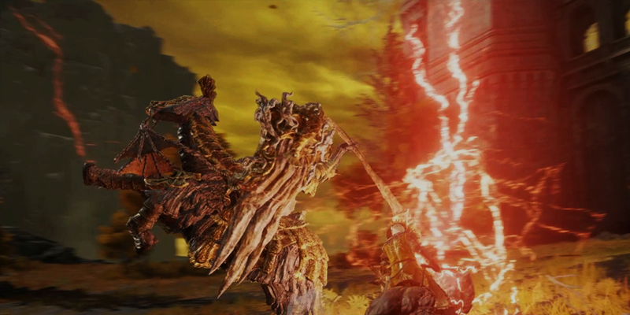

主線流程
為每隻Boss提供建議打法、攻略影片、外鄉打法，為新手、老手或各個未能過關的玩家提供幫助。
一般劇情線Boss戰：
惡兆 > 接肢 > 滿月女王 > 龍裝大樹守衛 > 惡兆王 > 火焰巨人 > 黑劍 >
葛孚雷 > 拉達岡 > 艾爾登之獸

為每隻Boss提供建議打法、攻略影片、外鄉打法，為新手、老手或各個未能過關的玩家提供幫助。
一般劇情線Boss戰：
惡兆 > 接肢 > 滿月女王 > 龍裝大樹守衛 > 惡兆王 > 火焰巨人 > 黑劍 >
葛孚雷 > 拉達岡 > 艾爾登之獸
通過率??%
血量: 13,362 HP
防禦力: 118
掉落28080盧恩, 大龍爪
通過率38.6%

血量: 10,620 HP
防禦力: 120
掉落220000盧恩, 黑劍瑪利喀斯的追憶
84550高雄市內門區大學路200號N棟3樓309-3
(000) 000-0000